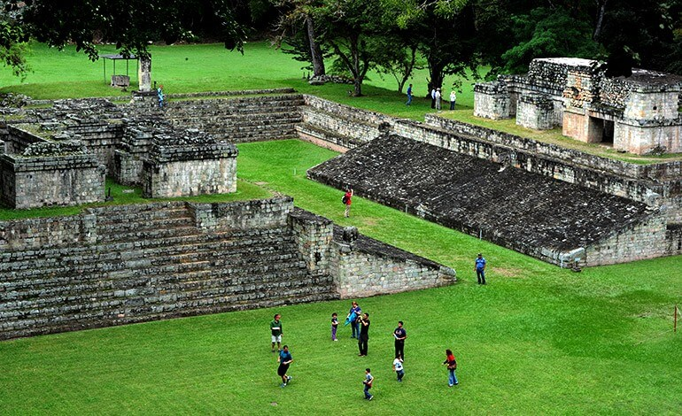
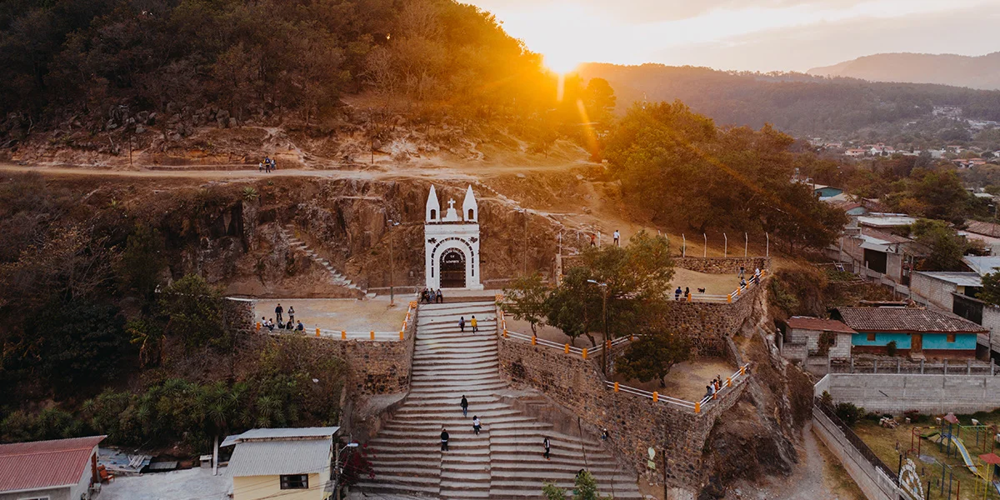
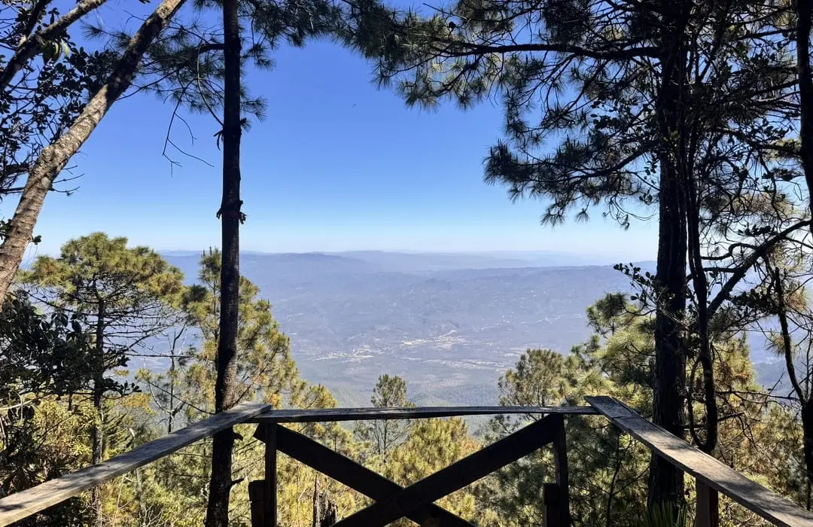
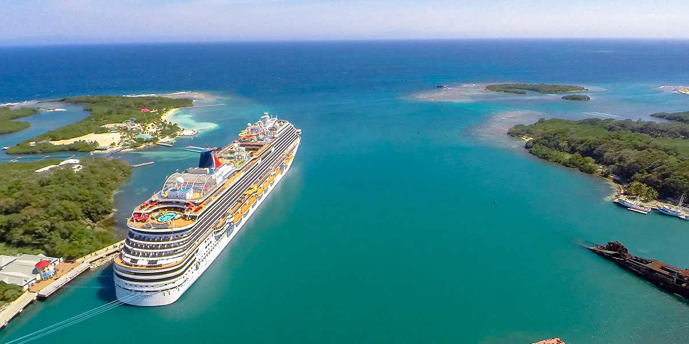

En conmemoración del Feriado Morazánico
Explora Honduras a través de cuatro rutas representativas. Cada destino incluye descripción, atractivos principales, nivel de dificultad y una tabla de distancias y tiempos estimados desde las principales ciudades.

Descripción física: Sitio arqueológico maya en el occidente del país, rodeado de colinas verdes y ríos. Clima templado.
Principales atractivos: Estelas y altares, Escalera Jeroglífica, Museo de Escultura, Museo de Arqueología, pueblo colonial cercano.
Nivel de dificultad de acceso: Bajo a medio. Caminatas suaves dentro del parque.
| Ciudad de origen | Distancia aproximada | Altitud del destino | Tiempo estimado de traslado |
|---|---|---|---|
| Tegucigalpa | 480 km | 600 m s.n.m. | 7 a 8 horas |
| San Pedro Sula | 220 km | 600 m s.n.m. | 3 a 4 horas |
| La Ceiba | 380 km | 600 m s.n.m. | 6 a 7 horas |

Descripción física: Región montañosa del occidente, con clima fresco y paisajes de pinos y cultivos tradicionales.
Principales atractivos: Artesanía lenca, mercados locales, iglesias coloniales, cultura viva de la etnia lenca, miradores naturales.
Nivel de dificultad de acceso: Medio. Carreteras de montaña, algunas curvas pronunciadas.
| Ciudad de origen | Distancia aproximada | Altitud del destino | Tiempo estimado de traslado |
|---|---|---|---|
| Tegucigalpa | 180 km | 1 700 m s.n.m. | 3 a 4 horas |
| San Pedro Sula | 280 km | 1 700 m s.n.m. | 5 a 6 horas |
| La Ceiba | 420 km | 1 700 m s.n.m. | 7 a 8 horas |

Descripción física: Bosque nublado en el departamento de Lempira. Alberga el pico más alto de Honduras (Cerro Las Minas, 2 870 m).
Principales atractivos: Senderos de montaña, cascadas, observación de aves, flora endémica, campamentos ecológicos.
Nivel de dificultad de acceso: Medio a alto. Requiere buena condición física para las caminatas.
| Ciudad de origen | Distancia aproximada | Altitud del destino | Tiempo estimado de traslado |
|---|---|---|---|
| Tegucigalpa | 320 km | 1 400 – 2 870 m s.n.m. | 5 a 6 horas |
| San Pedro Sula | 250 km | 1 400 – 2 870 m s.n.m. | 4 a 5 horas |
| La Ceiba | 400 km | 1 400 – 2 870 m s.n.m. | 7 a 8 horas |

Descripción física: Archipiélago en el Mar Caribe con playas de arena blanca, aguas cristalinas y el segundo sistema de arrecifes coralinos más grande del planeta.
Principales atractivos: Buceo y snorkel, playas, cultura garífuna, observación de delfines y tortugas, vida nocturna en West End (Roatán).
Nivel de dificultad de acceso: Bajo. Acceso por avión o ferry desde La Ceiba.
| Ciudad de origen | Distancia aproximada | Altitud del destino | Tiempo estimado de traslado |
|---|---|---|---|
| Tegucigalpa | Vuelo + ferry / avión | Nivel del mar | 1 hora de vuelo + traslado local |
| San Pedro Sula | Vuelo directo | Nivel del mar | 1 hora de vuelo |
| La Ceiba | Ferry o avión pequeño | Nivel del mar | 1 a 2 horas en ferry / 20 min en avión |